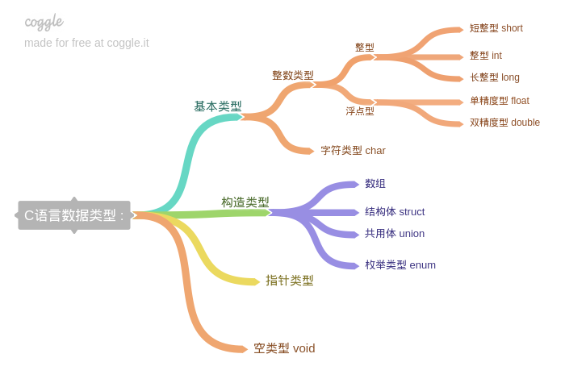

数据类型¶

在C语言中分为两中数据类型：
- 基本数据类型；
- 构造数据类型，把基本数据类型进行封装，变成一个新的数据类型；
整型¶
整型常量¶
- 十进制常数
int x = 123; // 正数
int y = -123; // 负数
- 八进制
以0为前缀
int x = 01234567; // 正数
int y = -01234567; // 负数
- 16进制
以0X或者0x为前缀，不区分大小写
int x = 0xFE; // 正数
int y = -0XFE; // 负数
- 后缀
L和U不区分大小写
int x = 100L; // 长整型
int y = 100U; // 无符号
int z = 100UL;// 混合
整型变量¶
- 声明和定义
int i; // 声明
i = 10; // 定义
| 类型 | 描述 | 所占字节 |
|---|---|---|
short |
短整型 | 2 |
int |
整型 | 4 |
long |
长整型 | 8 |
long long |
更长的长整型 | 8 |
signed |
有符号数 | 4 |
unsigned |
无符号数 | 4 |
#include <stdio.h>
int main(void)
{
printf("%d \n", sizeof(short));
printf("%d \n", sizeof(int));
printf("%d \n", sizeof(long));
printf("%d \n", sizeof(long long));
printf("%d \n", sizeof(signed));
printf("%d \n", sizeof(unsigned));
return 0;
}
不同的编译器环境下结果可能不一样，这里使用的是
cldeblocks+gcc
- 默认的缺省值
int as; // unsigned int as
long la; // long int la
unsigned long ula; // unsigned long int ula
short sa; // signed short int sa
unsigned short usa; // unsigned short int usa
long long lla; // long long int lla
unsigned long long ulla; // unsigned long long int ulla
变量与数据对象
- 变量的本质：一块连续的存储单元（内存、寄存器），不一定有地址；
- 变量有名字，用来表示存储单元（左值）或存储单元的内容（右值）；
- 数据对象没有名字，是一种具有数据类型的连续存储单元；
int x = y;
// x == 左值
// y == 右值
// 把变量y的内容赋值给x
常量只能当右值
整型数据的溢出¶
- 整数数据的表示范围
#include <stdio.h>
#include <limits.h>
int main(void)
{
printf("%d \n", INT_MAX); // INT类型所占空间最大值
printf("%d \n", INT_MIN); // INT类型所占空间最小值
return 0;
}
$ ./hello
2147483647
-2147483648
- 整数数据的溢出
在计算过程中超出的数据的表示范围会导致溢出
#include <stdio.h>
#include <limits.h>
int main(void)
{
printf("%d \n", INT_MAX + 1); // INT类型所占空间最大值+1
printf("%d \n", INT_MIN - 1); // INT类型所占空间最小值-1
return 0;
}
$ ./hello
-2147483648
2147483647
当溢出之后，最大值和最小值的将会交换。
字符型¶
ASCII码¶
ASCII（American Standard Code for Information Interchange，美国信息交换标准代码）是基于拉丁字母的一套电脑编码系统，主要用于显示现代英语和其他西欧语言。
ASCII是American Standard Code for Information Interchange缩写，而不是ASCⅡ(罗马数字2)

- 标准ASCII码分类
0-31是控制字符或通信专用字符（不可显示），32-126是可显示字符，包括数字、字母标点符号等。
字符常量¶
- 字符常量
字符型数据在内存中以ASCII码形式进行存储，使用单引号引起来，如： 'A'、'*'
#include <stdio.h>
int main(void)
{
char ch = 'A'; // ==> char ch = 65;
printf("%c \n", ch); // 以字符的方式进行输出
printf("%d \n", ch); // 以十进制的方式进行输出
return 0;
}
$ ./hello
A
65
- 分类
普通字符变量和转义字符，其中转义字符又分为：
- 制表符：
\t - 回车符：
\r光标往后移动一格 - 换行符：
\n
#include <stdio.h>
int main(void)
{
char ch = 'A', c = 65;
printf("%c\t%c\n", ch, c); // 制表符，换行符
printf("%c\r%c\n", ch, c); // 回车符，换行符
return 0;
}
$ ./hello
A A
A
字符变量¶
- 声明和定义
每个变量分配一个字节，允许对变量赋整数值，低8位赋值给字符变量，高位截断丢弃。
char ch;
ch = 65; // ASCII 65 == A
printf("%c\n", ch);
return 0;
- 字符和整数之间可以直接进行数值运算
直接将字符ASCII值与整数进行运算
当右值运算时，存在整数提升，先转换成：char-->int
与浮点型运算，转换顺序：char-->int-->float
#include <stdio.h>
int main(void)
{
char ch = 'A'; // A ==> 65
printf("%d\n", ch + 1); // 65 + 1 = 66
return 0;
}
$ ./hello
66
字符的输入与输出¶
%d格式打印，%c格式打印
- printf函数在打印char时做了什么
一个字符可以以%d和%c的形式输出，printf函数接受的无论是%d还是%c，参数都会被转成int类型。
#include <stdio.h>
int main(void)
{
char ch = 'A'; // A ==> 65
printf("%d\n", ch);
printf("%c\n", ch);
return 0;
}
$ ./hello
65
A
- scanf格式输入需要注意的地方
%c只接受一个字符，其余的丢弃，%d接收数据转换为二进制，存放在变量起始的连续四个存储单元中。
#include <stdio.h>
int main(void)
{
char ch;
printf("请输入一个ASCII字符：");
scanf("%c",&ch);
printf("%d\n", ch);
printf("%c\n", ch);
return 0;
}
$ ./hello
请输入一个ASCII字符：A
65
A
浮点型¶
可接近表示任意实数

浮点型数据分类
- float
- double
- long double
float f; // 声明
f = 12.04; // 定义
printf("%f\n", f); // 输出
浮点型数据存储，浮点数全都是有符号数

- 浮点数比较大小
#define EPSILON 1E-6
if(abs(df1 - df2)<EPSILON)
printf("df1=df2\n")
类型转换¶
当我们在进行运算，左边和右边的值类型不一样时就需要用到类型转换了。
隐式转换¶
当发生隐式转换的时候，编译器会自动帮我们转换。
什么时候发生隐式转换
- 当算术或逻辑表达式中操作数类型不相同；
- 当赋值运算符两侧类型不匹配；
- 函数调用过程中形参、实参不匹配；
- 当return语句表达式类型与函数返回类型不匹配；
#include <stdio.h>
int test(void) // test函数要求返回整型
{
return 1.1; // 实际返回浮点型
}
int main(void)
{
int i;
i = test(); // 赋值运算
printf("%d\n",i); // 实际赋值的是整形1
return 0;
}
$ ./hello
1
算术运算转换规则
- 空间占用小的数据转换为空间大的数据
- 浮点数：
float-->double-->long double - 整数：
char-->int-->unsigned-->long-->unsigned long-->long long
- 浮点数：
- 转换规则
- 在C99中，可以将任何等级低于
int或unsigned的类型转换到此类型，运行结束后转换。比如char - 如果连个书都没有浮点数，首先要将两个操作数整数提升
- 如果两个数都是无符号类型或者有符号类型，将等级较低的转换为等级较高的；
- 如果无符号数等级高于有符号数，将有符号数转换为无符号数类型；
- 如果有符号数类型可以表示无符号数类型的所有值，将无符号数转换为有符号数类型；
- 否则，将两个操作数都转换为与有符号数的类型相对于的无符号数；
- 在C99中，可以将任何等级低于
- 转换等级
- long long、unsigned long long;
- long、unsigned long；
- int、unsigend int；
- short、unsigned short；
- char、unsigned char；
- _Bool；
赋值运算转换规则
- 字符转换为整型：高位补零；
- 整型转换为字符型：截断；
- 整型转换为浮点型：添加小数位；
- 浮点型转换为整型：截断小数位；
- 字符型转换为浮点型（中间经过整型）
- 先提升为整型，然后再添加小数位；
- 浮点型转换为字符型（中间经过整型）
- 截断小数位，然后截断
强制转换¶
程序员在程序中用强制运算符转换
#include <stdio.h>
int main(void)
{
char ch = (int)65.1415926;
printf("%c\n", ch);
return 0;
}
转换的是值，而不是变量的类型，类型是不会改变的。
$ ./hello
A
C99新增类型¶
C99标准新增加的数据类型
布尔类型（_Bool）¶
布尔类型中，其值只能是0或者1，0为false，其他数值均为true
#include <stdio.h>
int main(void)
{
_Bool a = 0;
_Bool b = 99;
printf("%d \n", a);
printf("%d \n", b);
if(a)
printf("true");
if(b)
printf("true");
return 0;
}
$ ./hello
0
1
true
C语言特意弄了个头文件，让我们定义布尔值和其他语言一样，使用bool定义而不是_Bool
#include <stdio.h>
#include <stdbool.h>
int main(void)
{
bool a = 0;
bool b = 99;
printf("%d\n",true);
printf("%d\n",false);
return 0;
}
在头文件中，你可以看到下面的源码，帮你定义了布尔类型：
#define bool _Bool
#define true 1
#define false 0
复数类型(_Complex)¶
- 半个关键字，需要与其他类型的关键字组合
- float _Complex
- double _Complex
- long double _Complex
#include <stdio.h>
#include <complex.h>
#include <stdlib.h>
int main(void)
{
double complex dc1 = 1.5 + 7.2 * I;
double complex dc2 = 3.2 + 8.1 * I;
double complex dc3 = dc1 + dc2;
printf("%lf + %lfi\n",creal(dc3), cimag(dc3));
return 0;
}